ClapCraft · pantallas y componentes
Documento para pedir un diseño visual. Enseña, sin estilo, todo lo que la aplicación pinta hoy y con qué nombre lo pinta el código, para que el diseño que vuelva se pueda aplicar tal cual.
0. Estado actual (lo que hay hoy, para mejorarlo)
Capturas reales de la aplicación con datos de muestra, a 1280×820 (imágenes a doble resolución). Debajo, la paleta y la tipografía exactas que usa el código. Todo esto es lo que se quiere sustituir: sirve para saber qué hay y con qué nombre, no como referencia de estilo.
0.1 Pantallas actuales
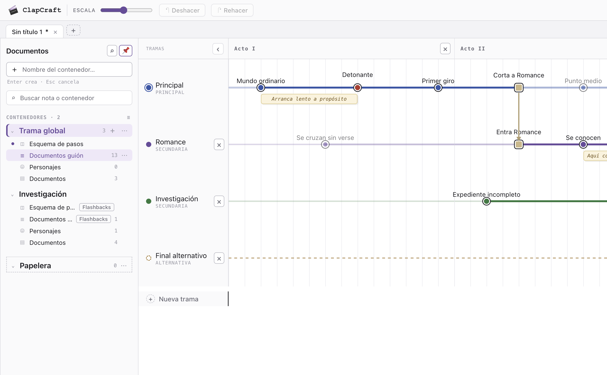
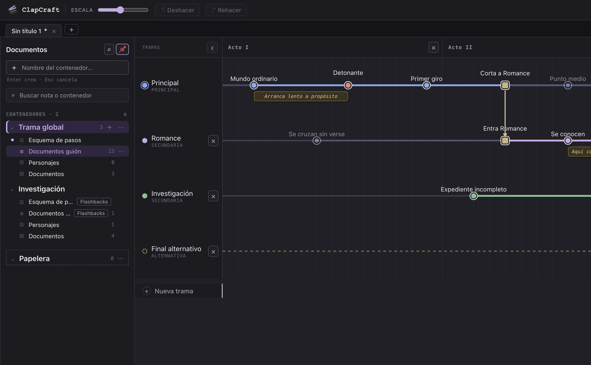
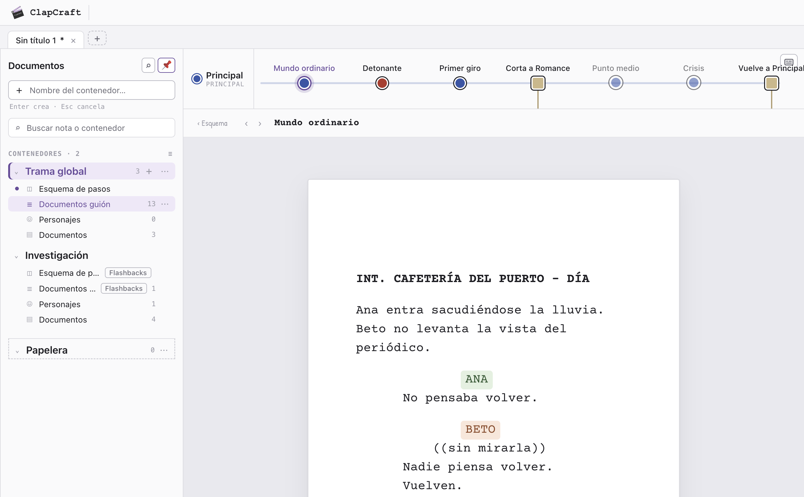
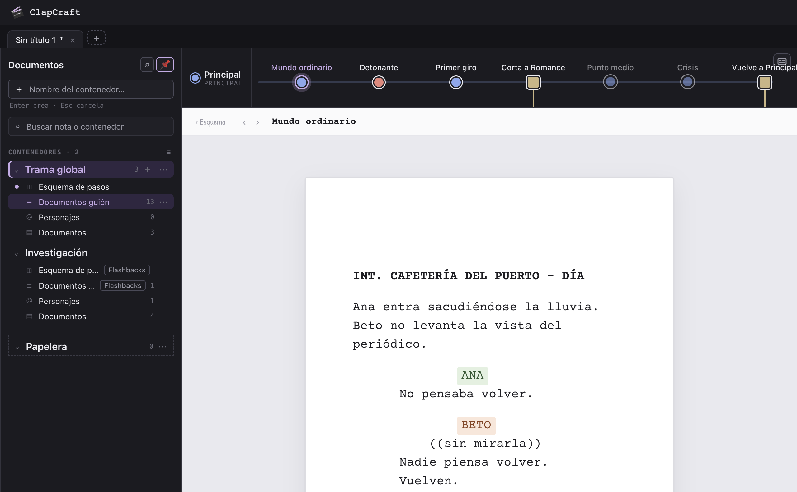
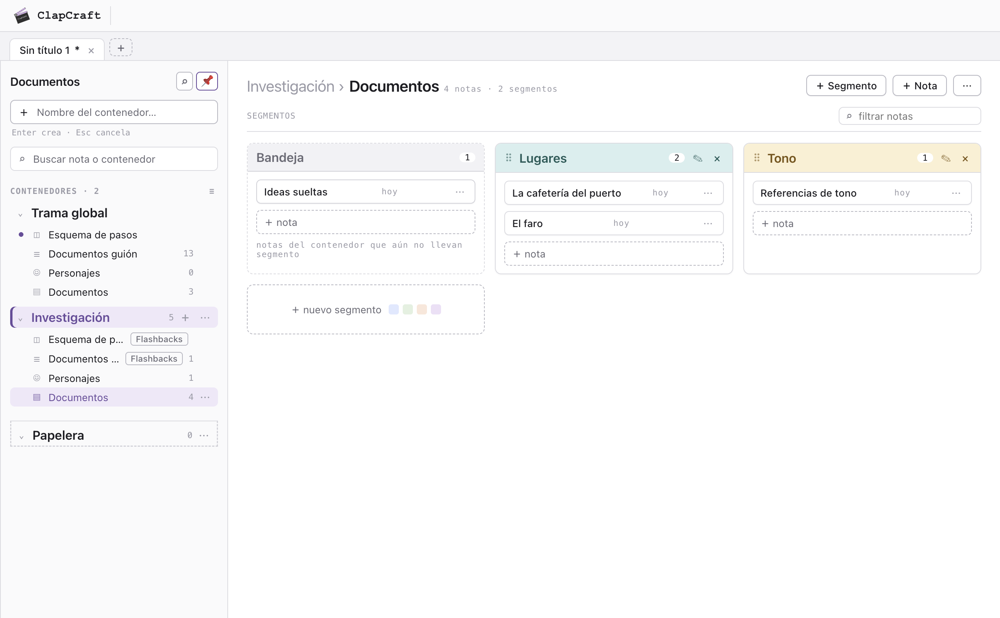
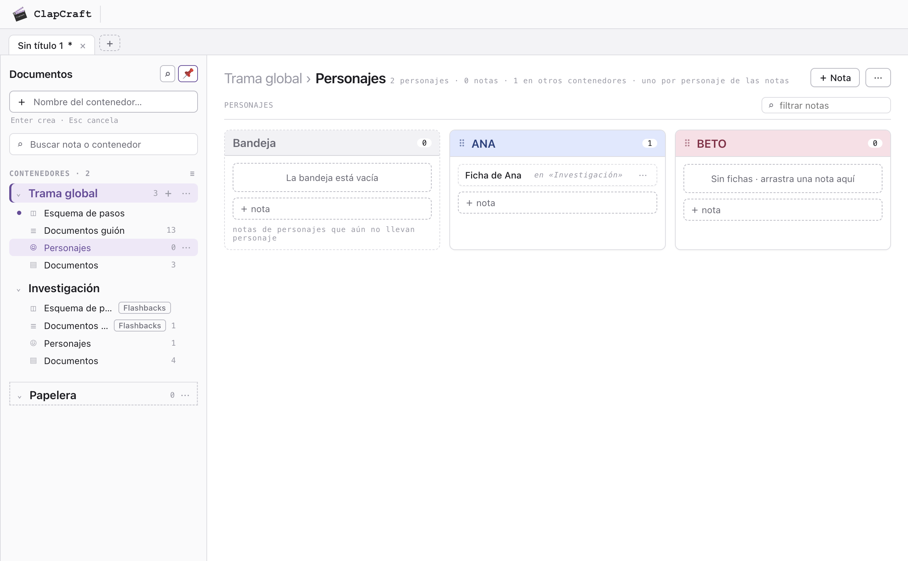
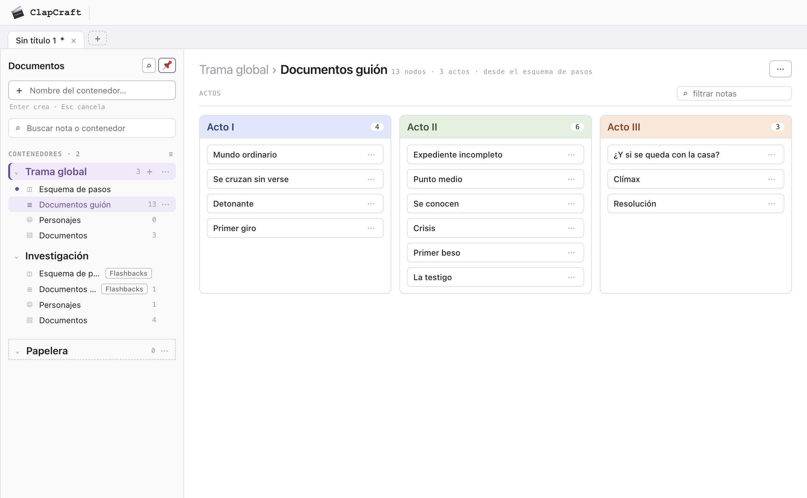
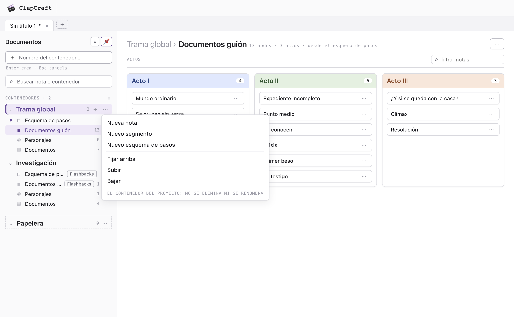
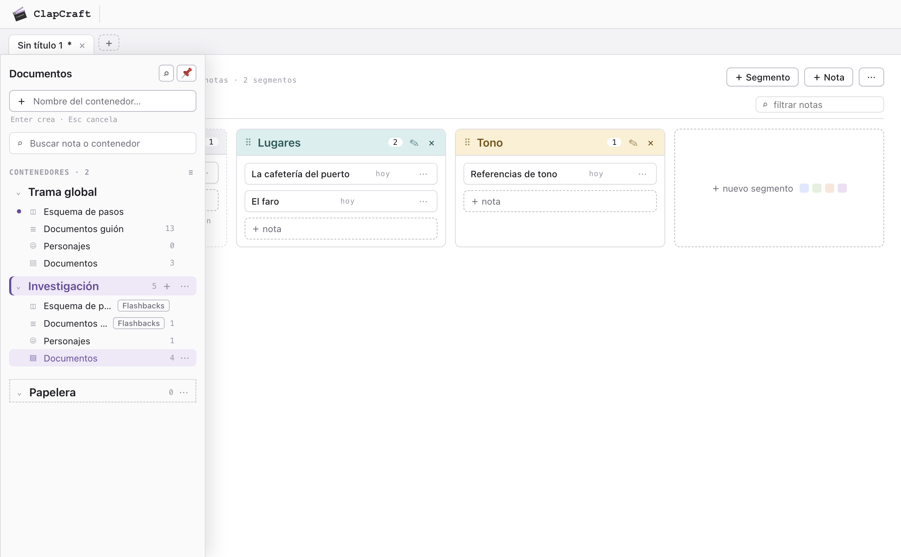
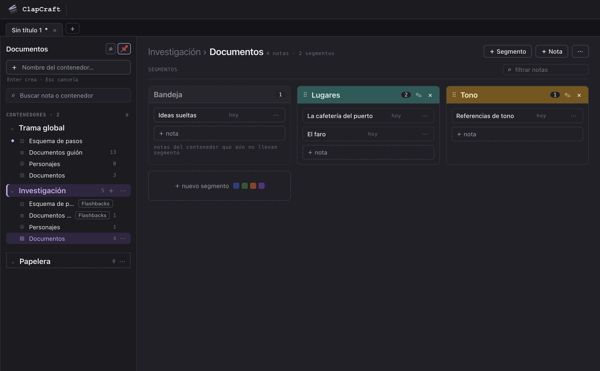
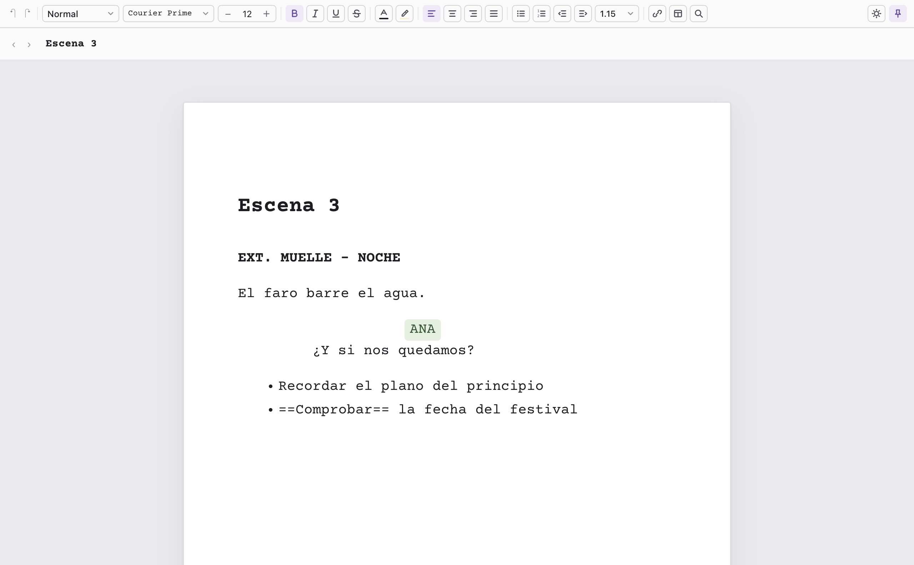
index.html, el que va dentro del marco): cinta de formato de dos filas, barra de título, hoja y barra inferior oscura con zoom, tamaño, ancho, Modo guion, Typewriter, Modo oscuro, Ortografía y Fijar.0.2 Piezas recortadas
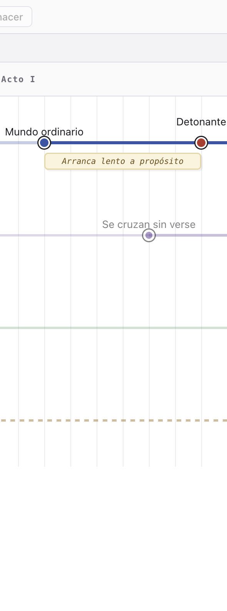
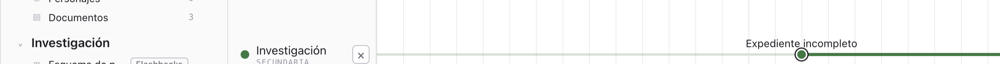
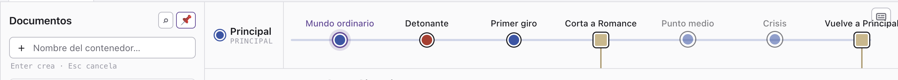
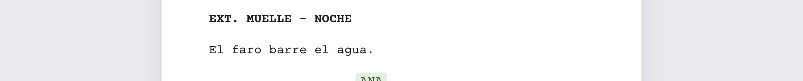
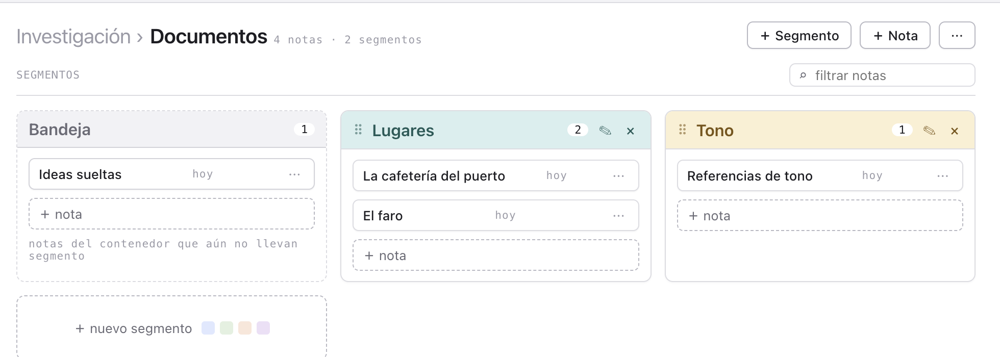
0.3 Tipografía actual
--sans: -apple-system, "SF Pro Text", "Inter", "Segoe UI", Roboto, Helvetica, Arial (la del sistema; en Mac, SF Pro)--mono: ui-monospace, "SF Mono", Menlo, Consolas, "Courier New"--marca: "Courier New", Courier negrita (requisito fijo)--doc-font: "Courier Prime" (empaquetada, regular/negrita/cursiva)ANA No pensaba volver.
"Patrick Hand" (empaquetada; era toda la interfaz antes de la piel y aún es la base de tramas.css y editor.css)| Escala de tamaños en uso | Dónde |
|---|---|
| 9.5–11 px mono | rótulos, contadores, metadatos, pista «Enter crea · Esc cancela» |
| 12.5–13 px | filas del árbol, notas, botones, pestañas, menús, migas, cinta del editor |
| 14 px | cuerpo, campos, panel del nodo |
| 15–16 px | título «Documentos» de la barra, nombre de trama en la tira, contenedores |
| 20–22 px | título del tablero («Trama global › Documentos») |
| 12 pt Courier Prime | la hoja del guion |
0.4 Paleta actual
Valores exactos de las variables CSS, claro y oscuro. La piel actual es gris neutro con la lavanda del logo como acento; debajo está también la paleta base anterior (crema y tinta) por si sirve de contraste.
Colores de la interfaz (piel actual: css/clapcraft.css)
| Token | Claro | Oscuro |
|---|---|---|
| Superficies | ||
--papel | #ffffff | #202026 |
--chrome | #f3f3f6 | #141418 |
--panel | #fafafb | #1b1b20 |
--hover | #f2f2f5 | #26262d |
--hover-fuerte | #e9e9ee | #2e2e37 |
--cuadricula | #ececf0 | #26262d |
--pista-hot | #f2f2f6 | #24242b |
--linea-menu | #ebebef | #2f2f38 |
| Trazos | ||
--regla | #e6e6eb | #2c2c34 |
--regla-fuerte | #d3d3da | #3b3b46 |
--borde | #dcdce2 | #33333d |
--borde-fuerte | #b9b9c3 | #4a4a58 |
| Texto | ||
--tinta | #1d1d22 | #ececf1 |
--tenue | #6b6b76 | #9a9aa6 |
--palido | #9a9aa6 | #6c6c78 |
--inverso | #f3f3f6 | #141418 |
| Acento | ||
--foco | #6a4c9c | #c8abe8 |
--foco-suave | #efe8f8 | #2f2741 |
--foco-halo | rgba(106, 76, 156, .18) | rgba(200, 171, 232, .22) |
--foco-banda | rgba(106, 76, 156, .06) | rgba(200, 171, 232, .07) |
--foco-linea | rgba(106, 76, 156, .3) | rgba(200, 171, 232, .32) |
| Semánticos | ||
--peligro | #b3362a | #e8857a |
--peligro-bg | #fbe4e0 | #3f2522 |
--nota | #fbf3dc | #3a3220 |
--nota-borde | #e6d5a3 | #6b5729 |
--nota-tinta | #6e4f12 | #e3c98c |
--nota-edit | #fdf8e8 | #41361f |
--nota-tenue | #9a7a2a | #c2a24e |
| Tablero: tramas y nodos | ||
--t-azul | #3556a8 | #8aa8ee |
--t-violeta | #6a4c9c | #c8abe8 |
--t-verde | #2f7a3e | #7cc48c |
--t-ambar | #9a6a10 | #d8a63f |
--t-rojo | #b3362a | #e8857a |
--t-gris | #5b5b66 | #b0b0bb |
--escena | #cdb787 | #cbb583 |
--escena-trazo | #b39d70 | #cbb583 |
--rombo | #7a5aa8 | #b592e0 |
--rombo-trazo | #7a5aa8 | #b592e0 |
| Tablero: fondos de acto | ||
--f-azul | #e6ecfb | #1f2a44 |
--f-violeta | #efe8f8 | #2f2741 |
--f-verde | #e4f2e6 | #1d3324 |
--f-ambar | #fbf1d6 | #3a3020 |
--f-rojo | #fbe4e0 | #3f2522 |
--f-gris | #ebebef | #2b2b32 |
Colores del editor (css/clapcraft-editor.css)
| Token | Claro | Oscuro |
|---|---|---|
--bg | #f3f3f6 | #1b1b20 |
--canvas | #e9e9ee | #141418 |
--bar | #fafafb | #1b1b20 |
--bar-2 | #f3f3f6 | #202026 |
--ink | #dcdce2 | #33333d |
--line | #d3d3da | #4a4a58 |
--line-soft | #e6e6eb | #2c2c34 |
--fg | #1d1d22 | #ececf1 |
--muted | #6b6b76 | #9a9aa6 |
--muted-2 | #9a9aa6 | #6c6c78 |
--icon | #4f4f5a | #b8b8c4 |
--hover | #ececf0 | #26262d |
--accent | #6a4c9c | #c8abe8 |
--accent-bg | #efe8f8 | #2f2741 |
--accent-fg | #6a4c9c | #c8abe8 |
--select-bg | rgba(239, 232, 248, .7) | rgba(47, 39, 65, .6) |
--star | #d9a021 | #e8b74a |
--page-bg | #ffffff | #202026 |
--page-fg | #1d1d22 | #ececf1 |
--page-muted | #6b6b76 | #9a9aa6 |
--page-soft | #f2f2f5 | #2a2a31 |
--page-line | #dcdce2 | #33333d |
--bb-bg | #2a2a31 | #141418 |
--bb-fg | #ececf1 | #ececf1 |
--bb-muted | #9a9aa6 | #8a8a96 |
--bb-line | #3b3b46 | #2c2c34 |
--bb-active | #6a4c9c | #c8abe8 |
--bb-active-fg | #ffffff | #141418 |
Paleta de 16 tonos (personajes y segmentos)
Cada tono tiene un par: fondo claro y tinta oscura. En modo oscuro se invierten (fondo oscuro, texto claro). Vive en js/claquedraw/documentos.js (PALETA), js/characters.js (PALETTE) y js/editor.js (TONES).
#DFE8FF #26417F#E2F0E0 #2C5730#FBE6DA #8A4320#EDE0F7 #563180#FBF0D2 #7A5410#FBDFE6 #8A2B47#D8EFEE #1F5B58#E8EED3 #4E5C1E#DEE0F8 #333B85#FDE2DC #8F3A2C#F3DCEF #71306A#EFE7DA #6B5638#D9ECFA #1F5476#E6F2CF #4A6013#F8E3CD #835012#E4E4E2 #3B3B39Colores base anteriores (css/tramas.css, el aspecto «a mano» que había antes de la piel)
Se dejan como referencia de lo que no gustó: papel crema, tinta negra, azul #26417f de acento, bordes de 1.5 px, sombras planas desplazadas.
| Token | Claro | Oscuro |
|---|---|---|
--papel | #ffffff | #1c1b19 |
--chrome | #f0eee9 | #131211 |
--panel | #fbfaf8 | #232120 |
--regla | #dcd7ce | #3a3733 |
--regla-fuerte | #c9c5bd | #4e4a45 |
--tinta | #1a1a1a | #ece8e0 |
--tenue | #8d8880 | #948e85 |
--palido | #a8a29a | #6f6a63 |
--foco | #26417f | #8fb0f0 |
--foco-suave | #dfe8ff | #25324c |
--nota | #fbf0d2 | #3a3120 |
--t-azul | #26417f | #7ea2e8 |
--t-violeta | #563180 | #b28ae0 |
--t-verde | #2c5730 | #6fbf7f |
--t-ambar | #7a5410 | #d8a63f |
--t-rojo | #8f3a2c | #e0796a |
--t-gris | #5c584f | #b0aaa1 |
0.5 Forma actual
- Bordes de 1 px (
--borde); radios 6 px en controles y notas, 8 px en tarjetas y menús, 7 px arriba en pestañas. - Sombras:
0 1px 2px rgba(20,20,30,.06), 0 6px 18px rgba(20,20,30,.08)en menús, fantasma de arrastre y hoja;0 1px 1pxen botones y notas. - Foco: anillo de 3 px
--foco-halo; selección: fondo--foco-suave+ borde--foco. - Barra de documentos 292 px; columna de tramas 190 px (110–420, contraíble a 44 px); panel del nodo 330 px; tira 96 px de alto; celda del tablero 48 px × escala.
- Iconos: caracteres de texto (⌕ 📌 ⋯ ＋ ⌄ › ◫ ☰ ☺ ▤ ✎ × ⠿ ↶ ↷), no un juego de iconos SVG salvo la cinta del editor.
1. Qué es la aplicación
ClapCraft es una herramienta de escritura de guiones para Mac (Electron; también corre en el navegador). Un archivo .cld es un proyecto. Tiene tres vistas que comparten cabecera, pestañas y una barra lateral de documentos:
- Esquema de pasos: un tablero con las tramas de la historia como carriles horizontales, dividido en actos; cada punto es una escena o momento («nodo»). Los cuadros y rombos son saltos entre tramas.
- Texto: el editor de guion (una hoja tipo procesador de texto) con, encima, la tira de una trama: sus nodos en línea de tiempo, para saltar de nota en nota. Cada nodo del esquema tiene su nota de texto.
- Documentos: el gestor. Contenedores (carpetas) con subcontenedores: Esquema de pasos, Documentos guión, Personajes y Documentos; tableros tipo kanban con tarjetas por segmento y notas dentro.
Sensación buscada: herramienta profesional de escritura, sobria, densa pero legible, agradable durante horas. Modo claro y oscuro con el mismo diseño. Referentes que gustan: Scrivener, Notion, Figma (tira de navegación), Clip Studio (pestañas de archivos).
2. Marca y restricciones
- Logo: una claqueta (SVG en
img/clapcraft.svg; colores del logo: gris oscuro #2f2f2f, gris #707070, lavanda #d5b3ea). El icono de la app sale del mismo SVG. - Texto de marca «ClapCraft» en Courier New, negrita, a la izquierda de la cabecera, junto al logo.
- El documento del guion siempre en Courier Prime; la interfaz puede usar cualquier familia (indicar cuál y si es de sistema o hay que empaquetarla). Hoy hay dos tipografías empaquetadas: Patrick Hand y Courier Prime.
- Todo el color se pinta con variables CSS (tokens). El tablero y la tira dibujan nodos y colores de trama con esos tokens, así que basta con definir la paleta.
- Idioma: español. Densidad: escritorio, ventana mínima 900×600.
3. Pantallas
Las cuatro composiciones. La cabecera, las pestañas y la barra lateral son las mismas en todas. En la app de Mac, Nuevo/Abrir/Guardar/tema van en el menú nativo, no en la cabecera.
3.1 Esquema de pasos
Elementos: columna de tramas (contraíble a un punto de color, ancho ajustable con un asa), eje de actos arriba, cuadrícula de celdas, nodos (punto = escena; cuadro y rombo = extremos de un salto entre tramas, unidos por un trazo), «＋» de celda al pasar el ratón, cadena de la ruta resaltada al seleccionar, panel lateral del nodo seleccionado, globo de descripción al pasar el ratón, menú contextual, diálogo de confirmación, aviso flotante abajo.
3.2 Texto (editor con la tira de la trama)
PRINCIPAL
ANA
No pensaba volver.
Elementos: la tira (chip de la trama a la izquierda; nodos dibujados igual que en el tablero con el título encima; el nodo actual resaltado; cuadros y rombos con el trazo del salto hacia la otra trama; botón para cambiar la tira por la cinta del editor), migas cuando la nota viene del gestor, cinta de formato del editor (dos filas de botones con iconos, selects de estilo/fuente/tamaño), barra de título del documento con flechas ‹ › para ir a la nota anterior/siguiente, la hoja (página blanca con sombra, tamaño y ancho ajustables, modo máquina de escribir), barra inferior oscura con conmutadores, chips de personaje con color, menú contextual del personaje con paleta de 16 colores, panel de buscar/reemplazar, menú «/» de bloques, tablas y bases de datos en la hoja.
3.3 Documentos (gestor)
Variantes del tablero central: Documentos guión (tarjetas fijas por acto con los nodos como notas, sin editar), Personajes (una tarjeta por personaje con el color que tiene en el editor; en Trama global, también las fichas de ese personaje en otros contenedores, con su origen y borde discontinuo), Papelera (lista de notas tiradas con origen y antigüedad, botón «Vaciar»). Estados de arrastre: fantasma de la nota bajo el puntero, zona de destino resaltada, marca de inserción entre notas, arrastre de segmentos por su cabecera.
3.4 Estados vacíos y arranque
- Proyecto nuevo: tablero de partida (3 actos, trama Principal con «Inicio», Secundaria vacía); barra con solo «Trama global» y sus cuatro subcontenedores.
- Tablero de Documentos sin notas: «La bandeja está vacía», «Segmento vacío · arrastra una nota aquí», «＋ nuevo segmento».
- Personajes sin personajes: «Los personajes aparecen aquí solos al escribirlos en las notas del editor».
- Sin guion abierto: «No hay ningún guion abierto».
- Barra suelta (no fijada): desaparece y queda un asa vertical «Documentos» en el borde izquierdo; al pulsarla la barra se asoma por encima.
4. Componentes
Cada uno con su nombre en el código (clase CSS), lo que contiene y los estados que necesita.
Cabecera .barra
.tool · botones .btn · indicador de guardado .estado (● cambios sin guardar / ✓ guardado / vacío sin archivo)Pestañas de archivo .pestanas .pestana
Botón .btn, mini .mini, peligro .btn.danger
Selector y deslizador select, input[type=range]
Campo de texto .gd-crear, .gd-buscar, .gd-filtro, campos del panel .field
Enter crea · Esc cancela
Barra lateral .gd-side
#ladoAsa en el borde y aparece encima con sombra).Fila de contenedor .gd-cont
.gd-edit). «Trama global» no se renombra ni elimina.Fila de subcontenedor .gd-sub
Fila de nota en el árbol .gd-nota-fila y etiqueta .gd-tag
Cabecera del tablero .gd-head y barra de sección .gd-barra
PERSONAJES ⌕ filtrar notas
Tarjeta de segmento .gd-etq
Nota en tarjeta .gd-nota
.gd-fantasma), marca de inserción «antes».Menú flotante .gd-pop, menú contextual del tablero #menu
Paleta de color .gd-paleta (segmentos y personajes)
Diálogo #dlg y aviso #aviso
Cancelar Eliminar
Esquema «Flashbacks» creado en «Investigación»
Tablero de tramas (componentes de tramas.css)
.axis .acto (nombre, fondo de color opcional, ×) · etiqueta de trama .label (punto de color, nombre, tipo PRINCIPAL/SECUNDARIA, ×) · carril .rail (continuo, discontinuo si alterna, cortado) · nodo .pt: punto, .caja (cuadro beige), .rombo (morado), descartado (tachado), fuera de escena (apagado), seleccionado (halo) · trazo del salto #cables · «＋» de celda #celda · ruta resaltada .cadena.ruta · nota entre nodos (post-it) · «＋ Nueva trama» · botón contraer columna #plegarTramas y asa de ancho #asaTramas--t-azul…gris) y 6 fondos de acto (--f-*), cuadrícula, foco, halo.Panel del nodo aside (tablero)
Tira de la trama .hilo
.chip .ltipo, nodos .hilo-nodo como en el tablero (título encima, o debajo si el trazo sube), actual .actual, posición de vuelta .pos, pin para cambiar a la cinta .hilo-pin. 96 px de alto.Migas .migas
Editor: cinta .ribbon, barra de título .topbar, hoja .page, barra inferior .bottombar
5. Tokens que el diseño debe definir
Con estos valores (claro y oscuro) el código se viste solo. Nombres actuales, para ir a lo seguro:
| Grupo | Token | Para qué |
|---|---|---|
| Tipografía | --sans, --mono, --marca (Courier New negrita), --doc-font (Courier Prime) | interfaz, rótulos pequeños, marca, documento. Tamaños base: cuerpo 14, rótulos 10–11, títulos de tablero 20–22. |
| Superficies | --chrome, --panel, --papel, --hover, --hover-fuerte, --cuadricula | fondo de app, barras/paneles, tarjetas y hoja, estados hover, cuadrícula del tablero |
| Trazos | --regla, --regla-fuerte, --borde, --borde-fuerte, --linea-menu | separadores, bordes de controles y tarjetas |
| Texto | --tinta, --tenue, --palido, --inverso | principal, secundario, rótulos, texto sobre fondo oscuro |
| Acento | --foco, --foco-suave, --foco-halo, --foco-banda, --foco-linea | selección, activo, foco de teclado, ruta resaltada |
| Semánticos | --peligro, --peligro-bg, --nota, --nota-borde, --nota-tinta | acciones destructivas, post-it del tablero |
| Tablero | --t-azul, --t-violeta, --t-verde, --t-ambar, --t-rojo, --t-gris; --f-* (fondos de acto); --escena/--escena-trazo, --rombo/--rombo-trazo | colores de trama y nodo, fondos de acto, cuadro y rombo de salto |
| Paleta | 16 pares claro/oscuro (PALETTE) | personajes y segmentos |
| Forma | radios (controles, tarjetas, menús), grosor de borde, --sombra (tarjetas, menús, hoja), espaciados | — |
| Editor | --bg, --bar, --fg, --muted, --line, --accent, --page-*, --bb-* (barra inferior) | mismo sistema, otros nombres (módulo aparte) |
6. Cómo entregar
- Una pantalla de cada vista (3.1, 3.2, 3.3) en claro y en oscuro, a 1280×820 o mayor.
- Una hoja de componentes con los estados de la sección 4 (basta con los principales: normal, hover, activo/seleccionado, desactivado, arrastre).
- La tabla de tokens de la sección 5 con valores; tipografías con nombre y origen.
- Si es HTML/CSS: valen las clases de esta página; si es Figma o imagen: anotar medidas y colores.
Archivo: docs/diseno/clapcraft-componentes.html · capturas en docs/diseno/img/ (se regeneran con ./node_modules/.bin/electron docs/diseno/capturar.js) · 13 de septiembre de 2026.